I'm Nico — a marketing student and bilingual content creator. I turn places, people and ideas into photography, short-form video and social content, from conservation projects in Hainan to my own TikTok storytelling.
Introduce a community-led ecotourism programme through the people, places and conservation work behind it.
Field photography, video, post copy and day-to-day Xiaohongshu publishing, with coordination for North American outreach.
Launched in Lingshui, Hainan with support from the SCS SAP SEA Grants programme led by UNEP, Tonghai Village is a project under the South China Sea and Gulf of Thailand Strategic Action Programme — funded by the GEF, delivered with UNOPS.
The project explores a community-driven approach to sustainable development built on marine conservation — combining local fishing culture, mangroves and coastal ecosystems, traditional crafts and community life to create meaningful ecotourism experiences while protecting the environment.
Working closely with local residents, it focuses on three areas: developing nature- and culture-based tourism experiences, training villagers to become eco-guides and cultural storytellers, and creating a community benefit mechanism so tourism income supports both local development and marine conservation.
On the content side, that's me: day-to-day publishing on the official Xiaohongshu (RED) account — shooting, editing and writing every post — and coordinating promotion to North American audiences from the Chinese side. The programme has since moved into its on-site experiential and operational phase.
"When the ocean thrives, the village thrives; and when the village thrives, there will be people to protect the ocean."
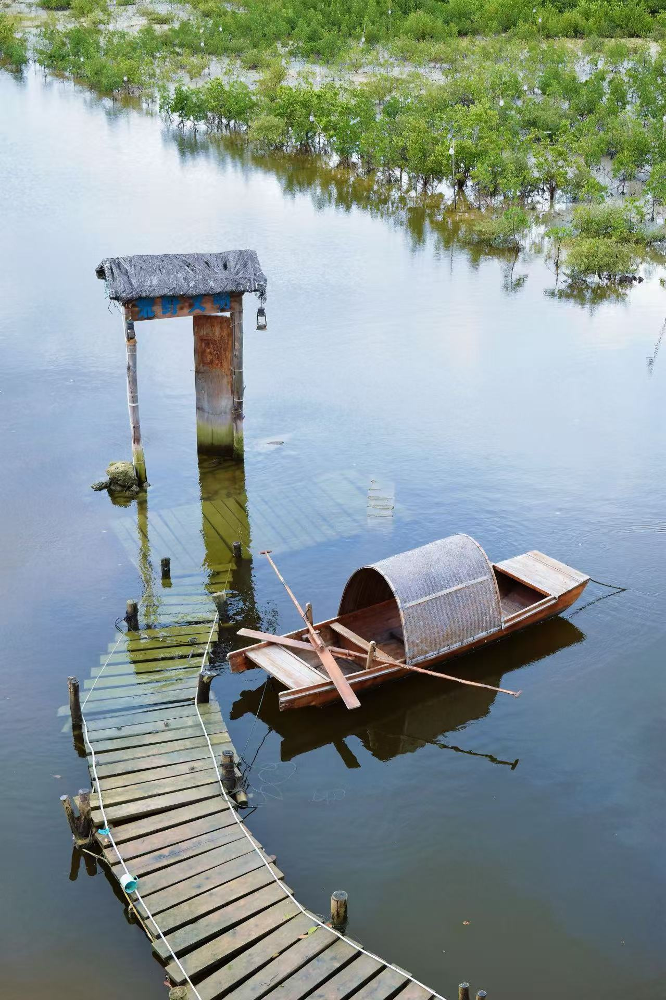
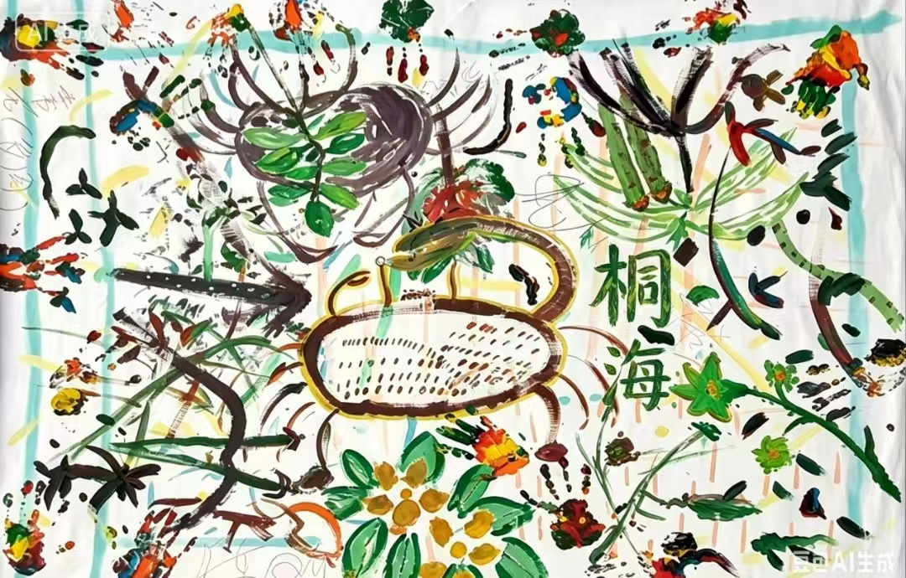
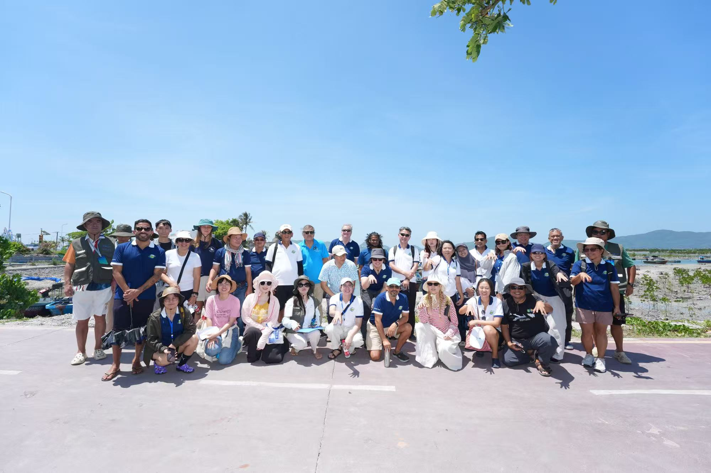
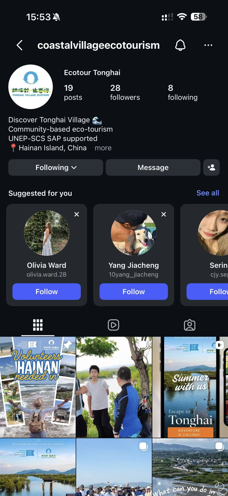
Dongzhaigang is China's first mangrove nature reserve — and a living model of how eco-tourism can fund conservation and support the communities living around it. I was part of the team that studied it and pitched its model internationally.
Our manuscript, “Dongzhaigang Mangrove Tourism Area: A Model of Ecotourism and Sustainable Community Development,” won the Best Practice Award at the 2024 Global Student Challenge on Sustainable Innovation in Tourism & Hospitality. I documented the reserve in the field and shot and edited the project film presented with our entry.
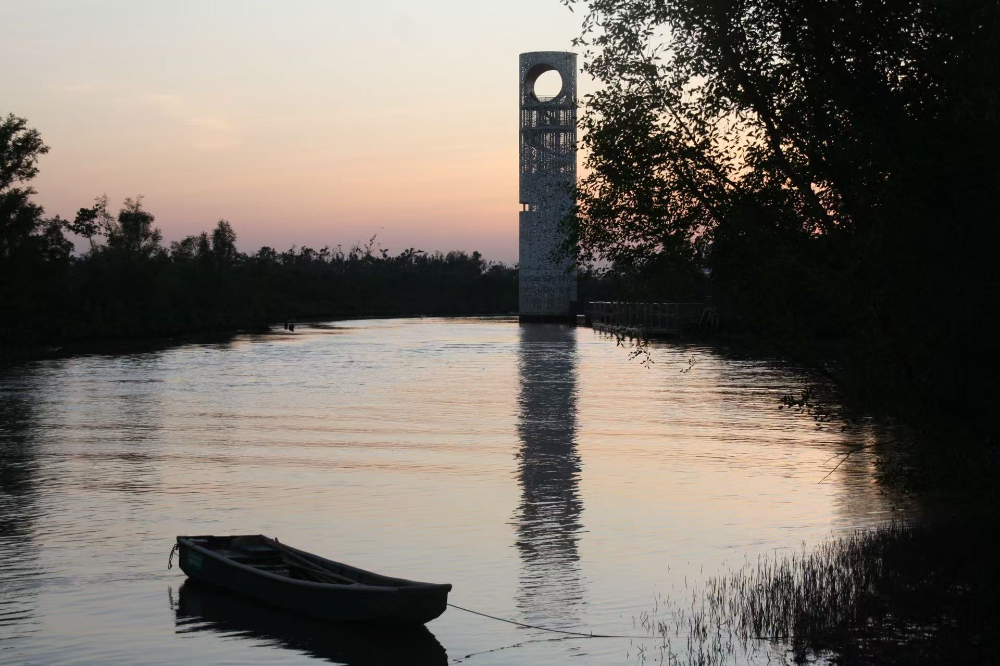
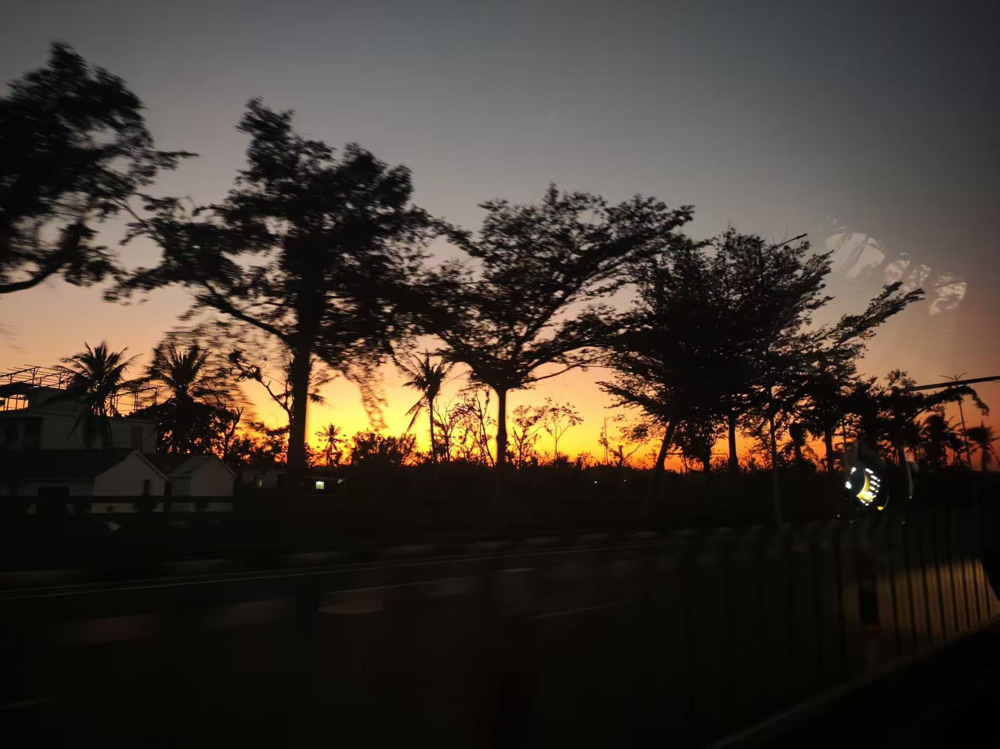
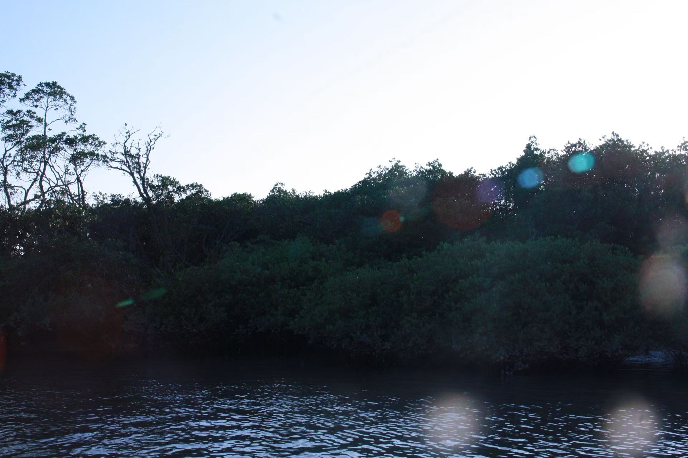
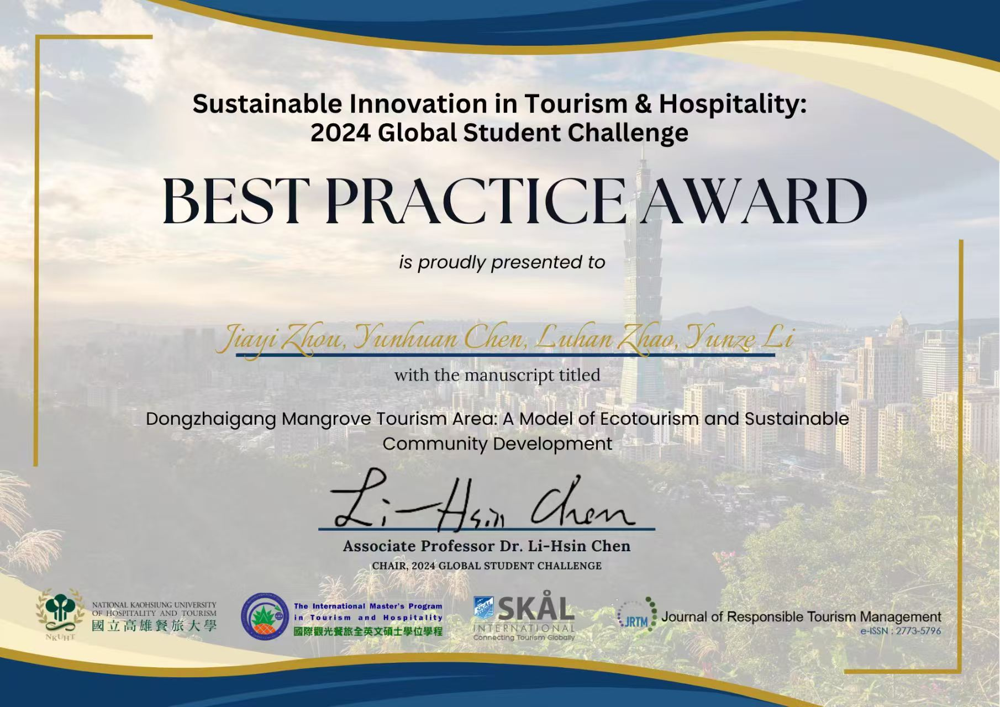
Presented to Jiayi Zhou, Yunhuan Chen, Luhan Zhao and Yunze Li for the manuscript “Dongzhaigang Mangrove Tourism Area: A Model of Ecotourism and Sustainable Community Development.”
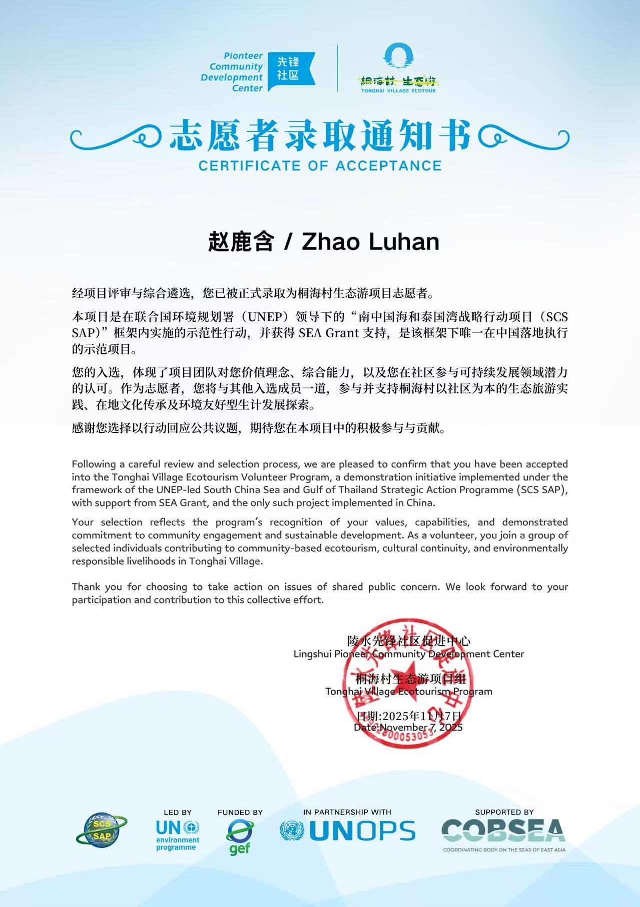
Selected under the UNEP-led SCS SAP framework with SEA Grant support, recognised for commitment to community engagement, sustainable development and cultural continuity.
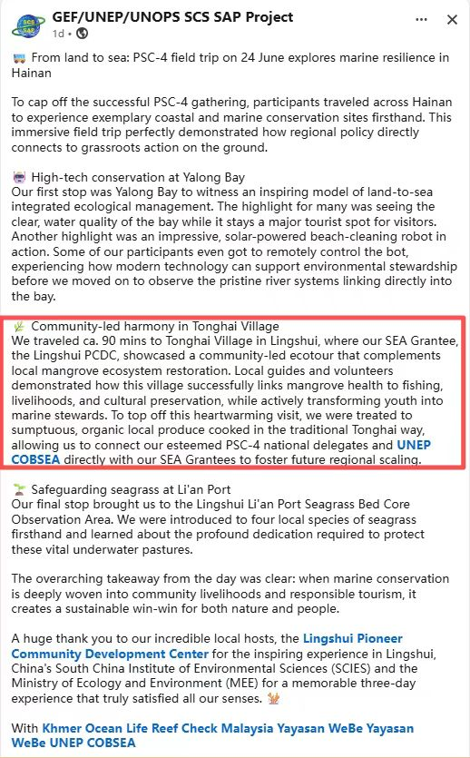
The programme's official channel documented the Tonghai Village visit — the community-led model, its local guides and volunteers, and the traditional Tonghai-way meal served to international delegates.
Authorised photographer for the studio's 15th anniversary showcase (津门街舞嘉年华) — full stage coverage of the company performance, delivered as the event's official image set.
Seasonal snow-sport photography at Nanshan (GOSKI 24/25) and on-site event coverage for the Nitro Beijing activation, shot on DJI Osmo Pocket 3 and my own stills kit.
Hi, I'm Nico (Zhao Luhan). I make media that helps people care — about a place, a programme, a brand, or a person. I shoot it, cut it, write it, and post it.
Most of what's on this page comes from two conservation-tourism projects in Hainan, one of them supported by UNEP and one of them award-winning. Along the way I've also been the authorised photographer for a dance studio's anniversary show, shot snow sports for a ski resort and a brand activation, and made posts that reached nearly a million views.
What I've learned is the same every time: content isn't decoration. It's how a project reaches the people it needs to reach — in China, in the US, or anywhere else.
I'm interested in marketing, social media and content roles where I can bring together hands-on production, bilingual communication and curiosity about what makes people pay attention.
Open to marketing, social media and content opportunities. Have a role or project in mind? Let’s talk.
Social Content, Real Reach
Two selected posts from my personal TikTok account. Results shown in the original post screenshots.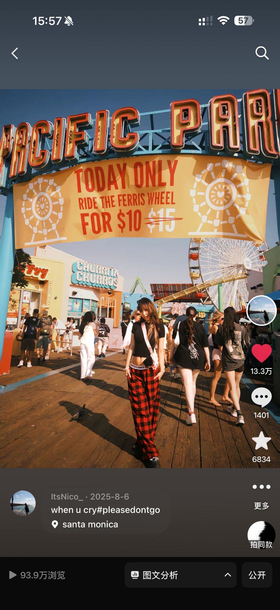
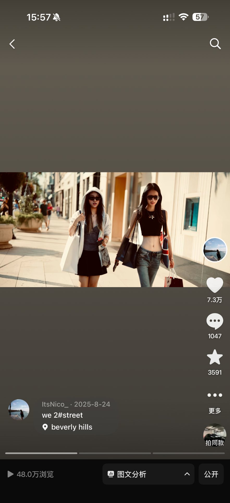
Own the production.
Photography, editing and captions brought together in one creator workflow.
Work across audiences.
English and Chinese publishing across personal content and conservation-project channels.
Use performance as feedback.
Review what resonates and bring those observations into the next piece of content.
My contribution: photography, editing and captions. These are individual post results, not account-wide totals or unique audience counts. My project work also includes bilingual publishing for @coastalvillageecotourism on Instagram (English) and the official Xiaohongshu account (中文).